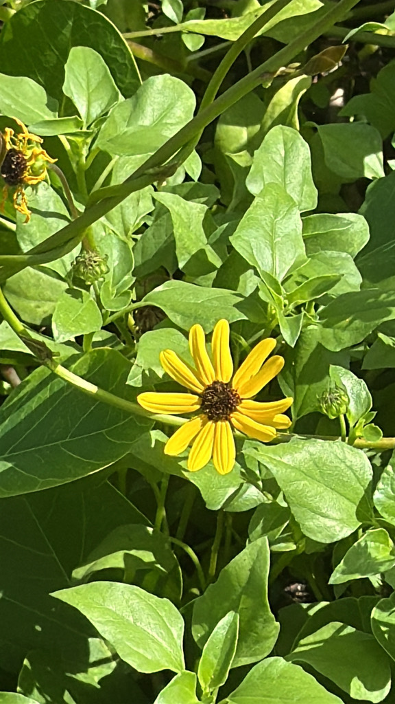

- Florida's own native sunflower, perfectly adapted to the harsh conditions of coastal dunes where most plants refuse to grow.
- Its seeds are a critical food source for migrating songbirds moving down the Gulf Coast each fall.
- Unlike the giant cultivated sunflower, this one stays compact and blooms prolifically from spring through winter.
- One of the best plants for pollinators and birds in any Florida yard — and among the toughest natives you can grow.
Native to Florida and the Gulf Coast of the United States. The subspecies cucumerifolius is native specifically to coastal dunes along the Gulf Coast, making it a natural fit for Manatee County. Three subspecies of Helianthus debilis occur naturally in Florida, each tied to a different coastal zone.
A member of the Asteraceae family — the same family as the Firewheel (Gaillardia) also in the park collection.
- Young Beach Sunflower stems track the sun through the day — a behavior called heliotropism — maximizing photosynthesis during the growing stage. Once the plant matures and flowers open, the tracking stops and flower heads orient east to warm up faster in the morning, attracting more pollinators. This is the origin of the sunflower's common name.
- Despite looking like a delicate wildflower, the Beach Sunflower is one of the toughest plants in Florida's coastal arsenal — thriving in pure sand, salt spray, and blazing sun where most plants give up. One of Florida's most salt-tolerant native wildflowers.
- Its dense spreading growth pattern is not accidental — the Beach Sunflower acts as a dune stabilizer, its sprawling stems holding sand in place against wind and wave action.
- The seeds are a documented food source for migrating songbirds traveling the Gulf Coast flyway each fall — including painted buntings, pine siskins, and American goldfinches.
- There is a Florida endemic subspecies (subsp. vestitus) known from only about 22 occurrences — making this seemingly common plant also a carrier of genuine rarity within its own species.
A documented magnet for migrating songbirds along the Gulf Coast flyway — painted buntings, pine siskins, and American goldfinches feed on the seeds in fall and winter. The flowers attract bees, butterflies, and moths throughout the long blooming season. The spreading stems stabilize sand and create cover for ground-nesting birds and small animals.
Few native plants deliver this combination of seed food, nectar, and ground cover in a single compact package.
Spreading perennial that reseeds freely, creating larger clumps over time. Spreads by both runners and seed. Annual in areas with freezing temperatures, but reseeds reliably.
Two to three-inch daisy-like flowers with 10–20 pale yellow ray petals surrounding a purplish-brown disk, blooming almost year-round in frost-free areas.
Small achenes — dry, single-seeded fruits eaten by birds and small mammals.
Small, dark green, deltoid (triangular), irregularly lobed and toothed, roughly textured. Up to 4 inches long.
Sometimes red or brown mottled. Spreading and sprawling, up to 3 feet long, rooting at nodes.
The compact sprawling habit, small yellow daisy flowers with brown centers, and rough triangular leaves are distinctive. Watch for painted buntings and goldfinches working the seed heads in fall and winter.
The seeds, young leaves, and stems are edible with no special caution, and the plant is safe to handle.
It's not toxic to dogs — the ASPCA and veterinary sources confirm Helianthus poses no poisoning risk.

- © Christine Leamon (CC-BY-NC), via iNaturalist
- © Franky McArthur (CC-BY-NC), via iNaturalist